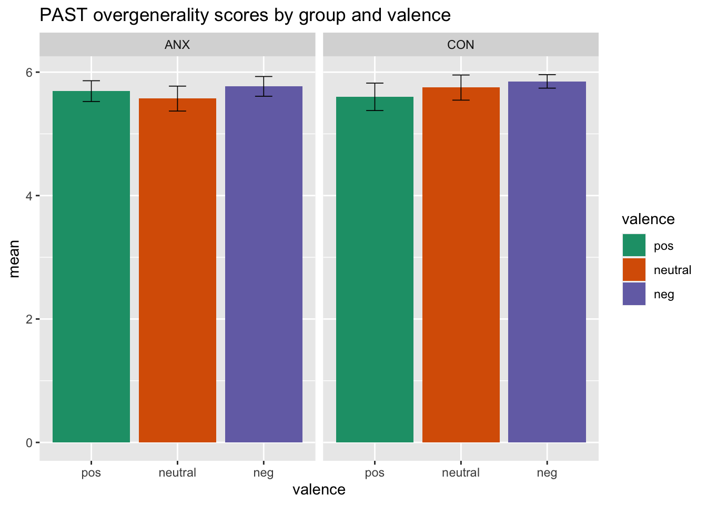
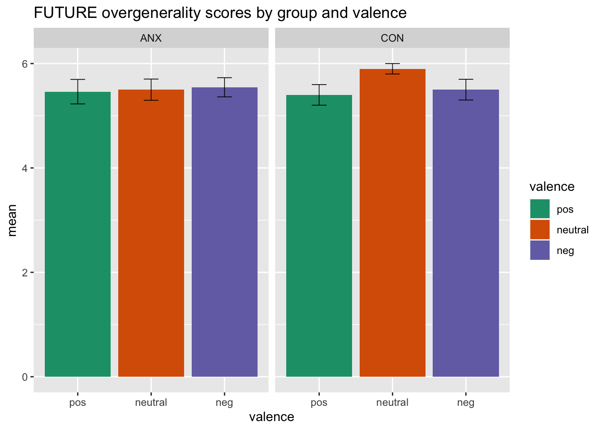
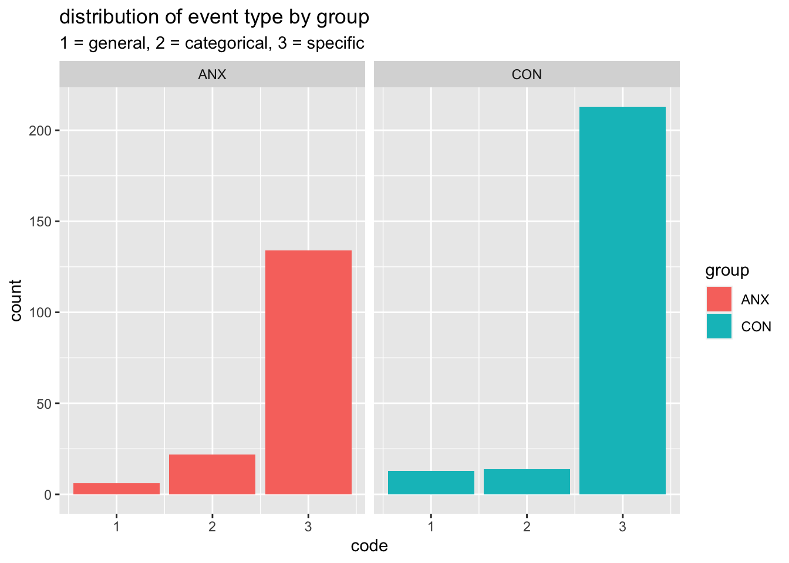
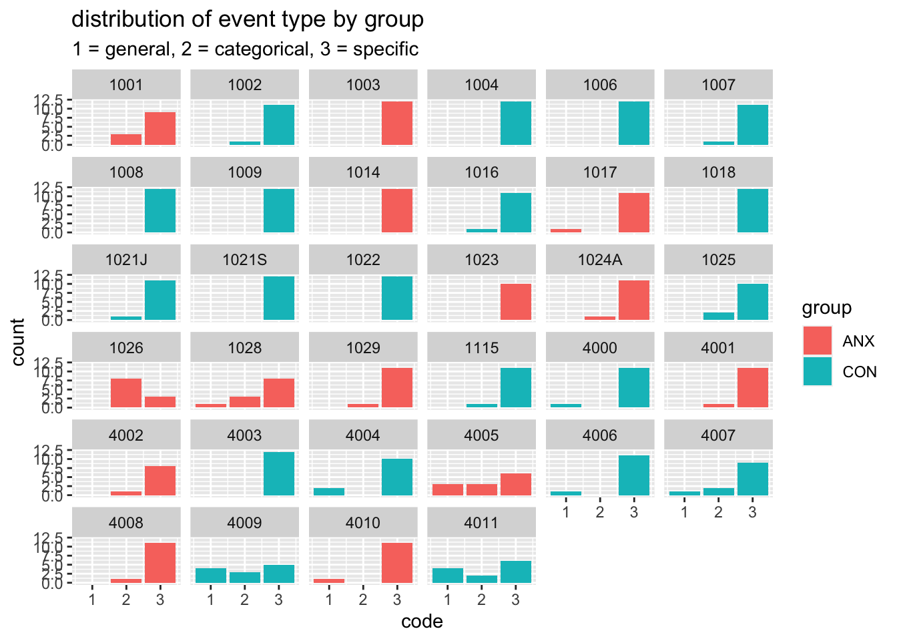
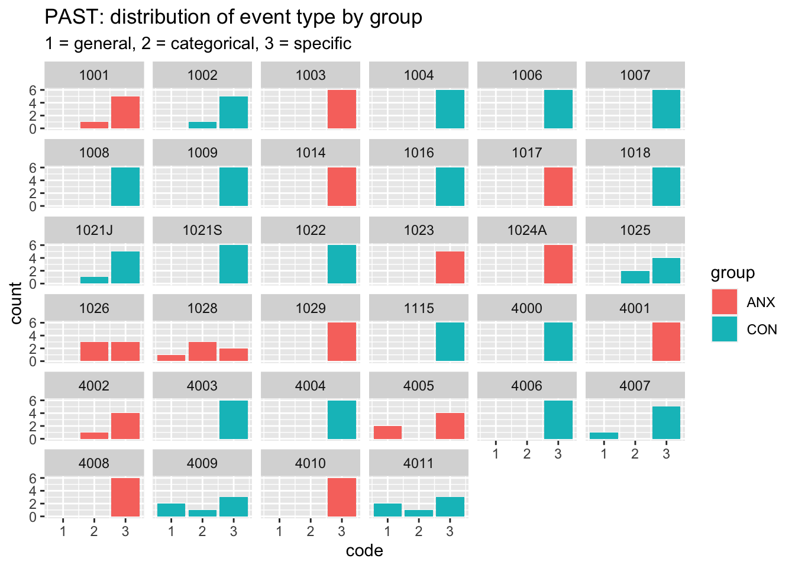
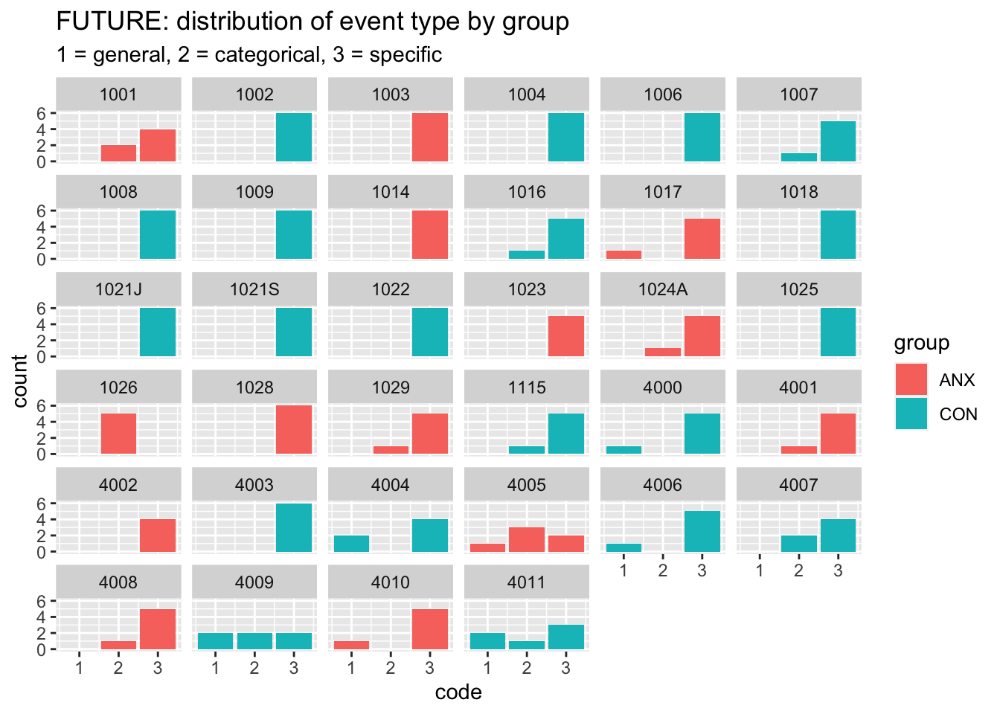

Last updated: 2020-09-07
Checks: 7 0
Knit directory: KelvinSarahJennyJess/
This reproducible R Markdown analysis was created with workflowr (version 1.6.2). The Checks tab describes the reproducibility checks that were applied when the results were created. The Past versions tab lists the development history.
Great! Since the R Markdown file has been committed to the Git repository, you know the exact version of the code that produced these results.
Great job! The global environment was empty. Objects defined in the global environment can affect the analysis in your R Markdown file in unknown ways. For reproduciblity it’s best to always run the code in an empty environment.
The command set.seed(20200901) was run prior to running the code in the R Markdown file. Setting a seed ensures that any results that rely on randomness, e.g. subsampling or permutations, are reproducible.
Great job! Recording the operating system, R version, and package versions is critical for reproducibility.
Nice! There were no cached chunks for this analysis, so you can be confident that you successfully produced the results during this run.
Great job! Using relative paths to the files within your workflowr project makes it easier to run your code on other machines.
Great! You are using Git for version control. Tracking code development and connecting the code version to the results is critical for reproducibility.
The results in this page were generated with repository version 2ccadad. See the Past versions tab to see a history of the changes made to the R Markdown and HTML files.
Note that you need to be careful to ensure that all relevant files for the analysis have been committed to Git prior to generating the results (you can use wflow_publish or wflow_git_commit). workflowr only checks the R Markdown file, but you know if there are other scripts or data files that it depends on. Below is the status of the Git repository when the results were generated:
Ignored files:
Ignored: .DS_Store
Ignored: .Rproj.user/
Ignored: Manuscripts/
Ignored: OLDAnalysis/
Ignored: Prism & Graphs/
Untracked files:
Untracked: data/study3_clean_mtt.csv
Unstaged changes:
Modified: data/Study 3_MTT_Clinical Group_ Data (65 or under).xlsx
Note that any generated files, e.g. HTML, png, CSS, etc., are not included in this status report because it is ok for generated content to have uncommitted changes.
These are the previous versions of the repository in which changes were made to the R Markdown (analysis/mtt_study3_plotting.Rmd) and HTML (docs/mtt_study3_plotting.html) files. If you’ve configured a remote Git repository (see ?wflow_git_remote), click on the hyperlinks in the table below to view the files as they were in that past version.
| File | Version | Author | Date | Message |
|---|---|---|---|---|
| Rmd | 2ccadad | Your Name | 2020-09-07 | pub cleaning_plotting |
| html | 74a06a6 | Your Name | 2020-09-01 | Build site. |
| Rmd | 8a89f0b | Your Name | 2020-09-01 | add plot template |
library(tidyverse)
library(janitor)
library(ggeasy)
library(here)mtt_long <- read_csv(here("data", "study3_clean_mtt.csv"))Parsed with column specification:
cols(
px_no = col_character(),
identifier = col_character(),
group = col_character(),
direction = col_character(),
valence = col_character(),
event = col_character(),
code = col_double(),
internal = col_double(),
external = col_double(),
proportion = col_double()
)Each participant was asked to talk about 2 events in each condition category
These 12 events were coded as 1 = general, 2 = categorical, 3 = specific. Only specific events can be coded for internal vs. external details.
The dummy coding involved adding these codes together for each condition combination resulting in a max score of 6 if participants came up with 2 x specific events, and a minimum score of 2 if they produced 2 x general events.
event_scores <- mtt_long %>%
group_by(group, direction, valence) %>% # for each combination of direction/valence
count(px_no, code)
dummy_scores <- event_scores %>%
mutate(dummy_score = code * n) # new column calc dummy score
overgen <- dummy_scores %>%
group_by(px_no, group, direction, valence) %>%
summarise(dummy_total = sum(dummy_score)) # for each pp, direction, valence, add the total dummy score together`summarise()` regrouping output by 'px_no', 'group', 'direction' (override with `.groups` argument)overgen$valence <- fct_relevel(overgen$valence, c("pos", "neutral", "neg"))overgen_summary <- overgen %>%
group_by(valence, group, direction) %>%
summarise(mean = mean(dummy_total, na.rm = TRUE),
sd = sd(dummy_total, na.rm = TRUE),
n = n(),
stderr = sd/sqrt(n)) `summarise()` regrouping output by 'valence', 'group' (override with `.groups` argument)… by group and valence
overgen_summary %>%
filter(direction == "past") %>%
ggplot(aes(x = valence, y = mean, fill = valence)) +
geom_col() +
geom_errorbar(aes(ymin=mean-stderr, ymax=mean+stderr),
size=.3, # Thinner lines
width=.2,
position=position_dodge(.9)) +
facet_wrap(~ group) +
scale_fill_brewer(palette="Dark2") +
labs(title = "PAST overgenerality scores by group and valence")
overgen_summary %>%
filter(direction == "future") %>%
ggplot(aes(x = valence, y = mean, fill = valence)) +
geom_col() +
geom_errorbar(aes(ymin=mean-stderr, ymax=mean+stderr),
size=.3, # Thinner lines
width=.2,
position=position_dodge(.9)) +
facet_wrap(~ group) +
scale_fill_brewer(palette="Dark2") +
labs(title = "FUTURE overgenerality scores by group and valence")
mtt_long %>%
ggplot(aes(x = code, fill = group)) +
geom_bar() +
facet_wrap(~group) +
labs(title = "distribution of event type by group", subtitle = "1 = general, 2 = categorical, 3 = specific") Warning: Removed 6 rows containing non-finite values (stat_count).
Most events are specific, but it looks like anx group has fewer events in general.
mtt_long %>%
ggplot(aes(x = code, fill = group)) +
geom_bar() +
facet_wrap(~px_no) +
labs(title = "distribution of event type by group", subtitle = "1 = general, 2 = categorical, 3 = specific")Warning: Removed 6 rows containing non-finite values (stat_count).
mtt_long %>%
filter(direction == "past") %>%
ggplot(aes(x = code, fill = group)) +
geom_bar() +
facet_wrap(~px_no) +
labs(title = "PAST: distribution of event type by group", subtitle = "1 = general, 2 = categorical, 3 = specific")Warning: Removed 2 rows containing non-finite values (stat_count).
mtt_long %>%
filter(direction == "future") %>%
ggplot(aes(x = code, fill = group)) +
geom_bar() +
facet_wrap(~px_no) +
labs(title = "FUTURE: distribution of event type by group", subtitle = "1 = general, 2 = categorical, 3 = specific")Warning: Removed 4 rows containing non-finite values (stat_count).
sessionInfo()R version 3.5.1 (2018-07-02)
Platform: x86_64-apple-darwin15.6.0 (64-bit)
Running under: macOS Sierra 10.12.6
Matrix products: default
BLAS: /Library/Frameworks/R.framework/Versions/3.5/Resources/lib/libRblas.0.dylib
LAPACK: /Library/Frameworks/R.framework/Versions/3.5/Resources/lib/libRlapack.dylib
locale:
[1] en_AU.UTF-8/en_AU.UTF-8/en_AU.UTF-8/C/en_AU.UTF-8/en_AU.UTF-8
attached base packages:
[1] stats graphics grDevices utils datasets methods base
other attached packages:
[1] here_0.1 ggeasy_0.1.2 janitor_1.2.0 forcats_0.5.0
[5] stringr_1.4.0 dplyr_1.0.1 purrr_0.3.3 readr_1.3.1
[9] tidyr_1.1.0 tibble_3.0.3 ggplot2_3.3.2 tidyverse_1.3.0
[13] workflowr_1.6.2
loaded via a namespace (and not attached):
[1] tidyselect_1.1.0 xfun_0.8 haven_2.3.1
[4] colorspace_1.4-1 vctrs_0.3.2 generics_0.0.2
[7] htmltools_0.5.0 yaml_2.2.1 blob_1.2.1
[10] rlang_0.4.7 later_1.1.0.1 pillar_1.4.6
[13] withr_2.2.0 glue_1.4.1 DBI_1.0.0
[16] RColorBrewer_1.1-2 dbplyr_1.4.4 modelr_0.1.8
[19] readxl_1.3.1 lifecycle_0.2.0 munsell_0.5.0
[22] gtable_0.3.0 cellranger_1.1.0 rvest_0.3.6
[25] evaluate_0.14 labeling_0.3 knitr_1.23
[28] httpuv_1.5.2 fansi_0.4.1 broom_0.7.0
[31] Rcpp_1.0.5 promises_1.1.1 backports_1.1.8
[34] scales_1.1.1 jsonlite_1.7.0 farver_2.0.3
[37] fs_1.4.1 hms_0.5.3 digest_0.6.25
[40] stringi_1.4.6 rprojroot_1.3-2 grid_3.5.1
[43] cli_2.0.2 tools_3.5.1 magrittr_1.5
[46] crayon_1.3.4 whisker_0.4 pkgconfig_2.0.3
[49] ellipsis_0.3.1 xml2_1.3.2 reprex_0.3.0
[52] lubridate_1.7.4 rstudioapi_0.11.0-9000 assertthat_0.2.1
[55] rmarkdown_1.15 httr_1.4.1 R6_2.4.1
[58] git2r_0.27.1 compiler_3.5.1